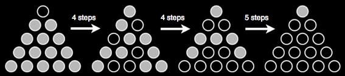

במשחק הסוליטייר שמימין מנצחים אם לאחר 13 צעדים נשארת רק אבן אחת על הלוח. בכל צעד, השחק בוחר אבן אחת, מדלג אתה מעל אבן אחרת ומוציא את האבן שמעליה דילג.
אין זו משימה קלה כל כך. כדי לגרות את תאבונכם, אנו מציגים מספר מצבי ביניים של פתרון עבור מצב התחלתי מסוים.
המקצוענים האמתיים מצליחים להביא את האבן האחרונה בדיוק לאותו מקום שהיה ריק בתחילת המשחק.
|  |
מצבי ביניים של פתרון